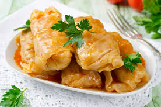

Tulajdonsagok
A káposzta (Brassica oleracea) az egyik legismertebb és leggyakrabban fogyasztott zöldségfajta a világon, különösen Közép- és Kelet-Európában. A káposzta a keresztesvirágúak (Brassicaceae) családjába tartozik, és számos különböző fajtája létezik, beleértve a fejes káposztát, vörös káposztát, kelkáposztát, kínai kelt és a karfiolt is, amelyek mindegyike ugyanabból a növényfajból származik, de különböző termesztési módokkal és szelekcióval alakultak ki.
